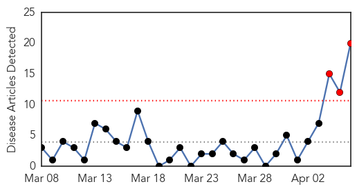
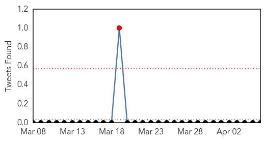
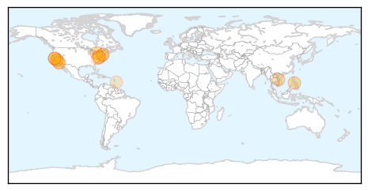

Dengue Fever
30-Day Web Trend
3 alerts, 0 warnings

30-Day Twitter Trend
5 alerts, 0 warnings

Article Locations

Article Confidences

Top Articles:
- 0.997
- World Health Day: Fight against vector-borne disease
- 0.995
- Blame poor sanitation and hygiene for three-fold rise in dengue cases
- 0.991
- Half the population of the Americas is at risk of diseases carried by small insects
- 0.985
- World Health Day to focus on vector-borne diseases
- 0.984
- Doctors call for concerted efforts to control vector-borne diseases
- 0.975
- Headlines, News, The Philippine Star
- 0.968
- Vector-borne diseases kill a million people every year
- 0.968
- World Health Day focus on mosquito-borne diseases
- 0.965
- World Health Day focus on mosquito-borne diseases
- 0.963
- World Health Day: 3.5bn persons at risk of vector-borne diseases – WHO
- 0.963
- Steep decline in dengue cases, National, Phnom Penh Post
- 0.960
- Health Ministry warns of vector-borne diseases
- 0.954
- With Coordinated Action From All Stakeholders, Including You, Indonesia Can Control Dengue
- 0.923
- World Health Day Event Discusses Preventive Measures For Dengue Virus
- 0.820
- Tempo - News in a Flash
- 0.819
- Solomon Islands Flooding – 26,000 Children Affected
- 0.742
- Global warming amplifying malaria risk
- 0.638
- Lucknow highly vulnerable to vector-borne diseases
- 0.628
- Soon, get real-time alerts on dengue
- 0.501
- Opinion, News, The Philippine Star
Top Tweets:
-
No tweets found for Apr 06, 2014
Measles
30-Day Web Trend
0 alerts, 1 warnings

30-Day Twitter Trend
0 alerts, 0 warnings

Article Locations
Article Confidences

Top Articles:
- 0.967
- Brampton infant tests positive for measles - Toronto
- 0.945
- UC Berkeley student in isolation with measles, second reported case of measles at the university
- 0.936
- A case of measles is confirmed in Springfield
- 0.896
- Experts decode germs’ DNA to fight food poisoning - National
- 0.890
- Health ministry urges measles vaccinations for children
- 0.882
- Washington Woman Exposes Thousands of Fans of Kings of Leon to Measles
- 0.873
- In America, vaccine denial goes mainstream
- 0.859
- UC Berkeley providing vaccinations after second student diagnosed with measles
- 0.820
- 2nd UC Berkeley student infected with measles 'could have exposed thousands'
- 0.820
- Second measles case confirmed at UC Berkeley
- 0.816
- Another U.C. Berkeley Student Diagnosed with Measles. Category
- 0.805
- Anti-vaccine movement is giving diseases a 2nd life
- 0.640
- Among US upper middle class, vaccine denial goes mainstream
- 0.633
- Measles On Canadian Flight Prompts Health Warning
- 0.623
- More talk needed: Call for comprehensive discussion on vaccines
- 0.558
- Infant from Abu Dhabi brings measles threat to Brampton
- 0.516
- Student Infected With Measles Kept In Isolation At UC Berkeley University
Top Tweets:
-
No tweets found for Apr 06, 2014